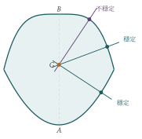

STEP III 2025，第 9 題
繼續之前，請先閱讀題目（原題為英文）。題目載於 OCR 提供下載的 2025 年 STEP 試卷（zip 檔案）內的 STEP III 試卷： www.ocr.org.uk/Images/750486-2025-past-papers.zip
引子
把一個欖球放在桌上，它會側躺着停下來；把它豎起來，只要十分小心，它也可以這樣平衡，但輕輕一碰就會倒下。每一個放在桌上的剛體（rigid body）都有一組平衡位置（equilibrium positions），其中有些是穩定（stable）的，有些是不穩定（unstable）的，而哪些位置存在，只取決於它的形狀和質心（centre of mass）。一個物體可以有多少個平衡位置？最少又可以有多少個？
這道題構造了一個立體，形狀像陀螺，上半部是圓頂，下半部是尖底，並證明它除了可以正立或倒立之外，還可以在三個不同的傾斜角度上靜止。關鍵思路是一個簡單的幾何條件：物體能以其表面上某一點着地而靜止，當且僅當表面在該點的法線（normal）通過質心。這背後有一項近年的發現：一個稱為 Gömböc 的凸（convex）形體，它只有一個穩定位置和一個不穩定位置。
動筆之前
一個立體放在桌上，只以其曲面上的一點 \(X\) 與桌面接觸。作用於它的力是它的重量（作用於質心 \(G\)）和在 \(X\) 的反作用力（reaction）。這兩個力何時平衡？
桌面在 \(X\) 與曲面相切，而反作用力作用於 \(X\)，並垂直於桌面，即沿着曲面的法線。重量則沿鉛垂方向作用，並通過 \(G\)。兩個力只有在沿同一直線作用時才能平衡，所以通過 \(X\) 的鉛垂線，也就是在 \(X\) 的法線，必須通過 \(G\)。因此：物體能以 \(X\) 着地而靜止，當且僅當在 \(X\) 的法線通過 \(G\)。
逐步解題
階段 1 質心
把立體切成薄薄的圓柱殼（cylindrical shells），半徑為 \(x\)，厚度為 \(\delta x\)，高度為 \(y\)。一個圓柱殼的體積是多少？它的質心在哪裏？
由於 \(y = \frac{r^n - x^n}{r^{n-1}}\)，一個圓柱殼的體積是 \(2\pi xy\,\delta x\)，而它的質心在高度 \(\frac y2\) 處。所以 \[V = \int_0^r 2\pi xy\,\mathrm{d}x = \frac{2\pi}{r^{n-1}}\Bigl(\frac{r^{n+2}}{2} - \frac{r^{n+2}}{n + 2}\Bigr) = \frac{n\pi r^3}{n + 2},\] 而對底面的矩（moment）是 \[\begin{aligned} \int_0^r 2\pi x\cdot\frac{y^2}{2}\,\mathrm{d}x &= \frac{\pi}{r^{2n-2}}\int_0^r x(r^n - x^n)^2\,\mathrm{d}x \\ &= \pi r^4\Bigl(\frac12 - \frac{2}{n + 2} + \frac{1}{2n + 2}\Bigr) = \frac{n^2\pi r^4}{2(n + 1)(n + 2)}. \end{aligned}\] （括號可以化簡，是因為 \((n + 1)(n + 2) - 4(n + 1) + (n + 2) = n^2\)。）兩者相除，得 \[\bar y = \frac{nr}{2(n + 1)}. \qed\] 當 \(n = 2\)（拋物面，paraboloid）時，這是 \(\frac r3\)，正是大家熟悉的結果；當 \(n \to \infty\) 時，立體變成圓柱，而 \(\bar y \to \frac r2\)。
階段 2 法線與軸相交之處
曲線在 \(x = rp\) 的斜率（gradient）是 \(-\frac{nx^{n-1}}{r^{n-1}} = -np^{n-1}\)，所以法線的斜率是 \(\frac{1}{np^{n-1}}\)。沿法線由 \(\bigl(rp, r(1 - p^n)\bigr)\) 走到 \(y\)-軸，\(x\) 減少了 \(rp\)，而 \(y\) 減少了 \(\frac{rp}{np^{n-1}} = \frac{r}{np^{n-2}}\)。所以 \[Y = r\Bigl(1 - p^n - \frac{1}{np^{n-2}}\Bigr). \qed\]
當 \(n = 4\) 時，\(Y = r\bigl(1 - p^4 - \frac{1}{4p^2}\bigr)\)。它在哪裏取最大值？當 \(p \to 0\) 時，以及在 \(p = 1\) 時，情況如何？
\(\frac{\mathrm{d}Y}{\mathrm{d}p} = r\bigl(-4p^3 + \frac{1}{2p^3}\bigr) = 0\) 成立於 \(p^6 = \frac18\)，即 \(p^2 = \frac12\)。這時 \(Y = r\bigl(1 - \frac14 - \frac12\bigr) = \frac14r\)。■
當 \(p \to 0\) 時，\(Y \to -\infty\)（圓頂在頂部附近非常平坦，它的法線幾乎是鉛垂的，要在很低的地方才與軸相交）；在 \(p = 1\) 時，\(Y = -\frac14r\)。所以當 \(p\) 由 \(0\) 增至 \(1\) 時，\(Y\) 由 \(-\infty\) 上升至 \(\frac14r\)，再回落至 \(-\frac14r\)。
階段 3 陀螺
第 (iii) 部分的立體，是一個圓頂（\(n = 4\)）疊在一個倒轉的拋物面（\(n = 2\)）之上。它的質心在哪裏？
由步驟 1，圓頂的體積是 \(\frac{2\pi r^3}{3}\)，質心在 \(\frac{2r}{5}\)；拋物面的體積是 \(\frac{\pi r^3}{2}\)，而由於它是倒轉的，質心在 \(-\frac r3\)。所以 \[\bar y = \frac{\frac23\cdot\frac25 - \frac12\cdot\frac13}{\frac23 + \frac12}\,r = \frac{\frac{4}{15} - \frac16}{\frac76}\,r = \frac{3r}{35}.\] \(G\) 位於 \(\bigl(0, \frac{3r}{35}\bigr)\)，比最闊之處略高。
階段 4 數算平衡位置
傾斜的平衡位置需要有一點（不是 \(A\) 或 \(B\)），其法線通過 \(G\)。在曲面的每一部分上，有多少個點的法線與軸相交於高度 \(\frac{3r}{35}\)？
圓頂。它的法線與軸相交的高度 \(Y\) 由 \(-\infty\) 上升至 \(\frac14r\)，再下降至 \(-\frac14r\)。由於 \(-\frac14r < \frac{3r}{35} < \frac14r\)，根據介值定理（intermediate value theorem），\(\frac{3r}{35}\) 這個值在上升的一段取得一次，在下降的一段也取得一次：共兩點。
尖底。由第 (ii) 部分取 \(n = 2\)，再對 \(x\)-軸作反射，可知在參數為 \(p\) 的點上，法線與軸相交於 \(-r\bigl(1 - p^2 - \frac12\bigr) = r\bigl(p^2 - \frac12\bigr)\)，這個值由 \(-\frac12r\) 遞增至 \(\frac12r\)。它恰好有一次等於 \(\frac{3r}{35}\)，就是在 \(p^2 = \frac{41}{70}\) 時。
這三點各給出一個平衡位置，而三條法線與軸所成的角各不相同，所以 \(\overrightarrow{AB}\) 與鉛垂線成三個不同的非零角（圖 11.8.1）。■

回顧
把物理條件化為幾何。平衡變成了「法線通過 \(G\)」。
不用求解也能證明存在。我們從沒有求出那些角。介值定理，加上函數 \(Y(p)\) 的形狀，已說明了它們有多少個。
重用一般結果。第 (ii) 部分對一般的 \(n\) 所得的結果，一併處理了第 (iii) 部分中曲面的兩個部分。
背後的數學
平衡位置即臨界點
當立體以點 \(X\) 着地而靜止時，\(G\) 離桌面的高度就是由 \(G\) 到在 \(X\) 的切平面（tangent plane）的距離；對凸體來說，當 \(GX\) 沿着法線時，這個距離就是 \(|GX|\)。一般而言，平衡位置就是由 \(G\) 到曲面的距離的臨界點（critical points）：使 \(|GX|\) 取駐值的點 \(X\)，正好就是法線通過 \(G\) 的點。穩定的平衡位置是這個距離的局部極小值（\(G\) 盡可能低），而不穩定的則是局部極大值或鞍點（saddle points）。
沿着截面由 \(A\) 走到 \(B\)，與 \(G\) 的距離依次是：在 \(A\) 較大（極大值：以尖端平衡，不穩定），在尖底上的傾斜點較小（極小值，穩定），在邊緣較大，在圓頂上較低的傾斜點較小（穩定），在較高的傾斜點較大（不穩定），而在 \(B\) 較小（穩定：以圓頂的頂部着地）。正如圖中所示，極小值和極大值必定交替出現。（事實上還有一個題目沒有計算在內的平衡位置：立體可以不穩定地平衡在它尖銳的邊緣上，曲面在那裏沒有唯一的法線。）
Gömböc
一個凸體最少可以有多少個平衡位置？任何物體都至少有一個穩定位置和一個不穩定位置：就是曲面上離 \(G\) 最近和最遠的點。密度均勻的二維凸形狀總是至少有四個（距離的兩個極小值和兩個極大值，交替出現）。1995 年，阿諾爾德（Vladimir Arnold）提出一個問題：密度均勻的三維凸體，能否只有兩個平衡位置，即一個穩定、一個不穩定？2006 年，Gábor Domokos 和 Péter Várkonyi 構造出這樣的一個形體，就是 Gömböc：無論以甚麼姿勢把它放下，它都會滾動搖晃，直至到達它唯一的穩定位置為止。Domokos 後來留意到，有些陸龜的殼很接近這個形狀，這有助牠們在被翻轉後自行翻身。
對物體穩定性的研究可以追溯至阿基米德（Archimedes）。他在《論浮體》（On Floating Bodies）中，根據形狀和密度，分析了一個浮着的拋物面（船身的一個模型）何時能穩定地直立，何時會翻側。他只用幾何便得出答案，當中涉及的正是本節所用的那種質心和法線的計算。造船工程師至今仍在運用他的想法，形式就是穩心（metacentre）：如果通過浮心（centre of buoyancy）的鉛垂線與船的軸線的交點位於質心之上，船便是穩定的。
思維技巧
平衡位置是勢能（potential energy）的駐點（stationary points），而穩定的平衡位置是它的極小值。與其把駐點逐一解出來，不如數算它們的數目。
這裏的勢能與 \(G\) 的高度成正比，也就是由 \(G\) 到曲面的距離。在大學裏，這個觀點貫穿力學、化學（分子會落入能量的極小值）和拓撲學；在拓撲學中，莫爾斯理論（Morse theory）說明，曲面上任何函數的極小值、極大值和鞍點的數目，都受曲面的形狀所限制。
延伸練習
不倒翁玩具。試做 STEP II 1996，第 9 題：一個置於半球上的圓錐，何時會自行回正？（提示：相對於半球的球心，\(G\) 必須在哪裏？）
球體。對於均勻實心球體，每一條法線都通過球心。這說明它的平衡位置有甚麼特點？如果球體的質心稍為偏離球心，又會怎樣？
橢圓。證明一塊橢圓形圓盤在其自身所在的平面內沿一條直線滾動時，恰好有四個平衡位置，並指出哪些是穩定的。
兩個拋物面。把第 (iii) 部分的圓頂換成拋物面 \(ry = r^2 - x^2\)，使立體對 \(x\)-軸對稱。證明 \(G\) 位於原點，求出傾斜的平衡位置，並解釋為何它們成對出現，且每對的傾斜角相等。
延伸閱讀
Péter Várkonyi & Gábor Domokos, 「Static equilibria of rigid bodies: dice, pebbles, and the Poincaré–Hopf theorem」, Journal of Nonlinear Science 16 (2006)。提出 Gömböc 的論文。
Daniel Kleppner & Robert Kolenkow, An Introduction to Mechanics（Cambridge University Press），論平衡與穩定性。
Chris Rorres, 「Completing Book II of Archimedes’s On Floating Bodies」, Mathematical Intelligencer 26 (2004)。阿基米德的穩定性分析，配以現代圖解。